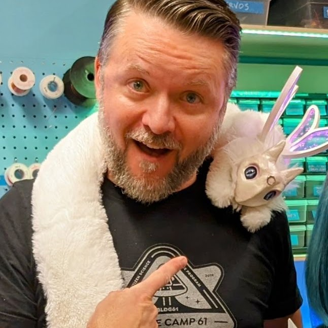
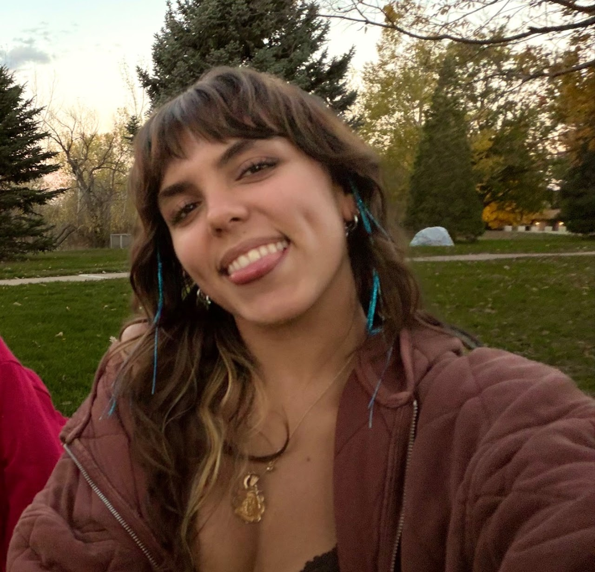
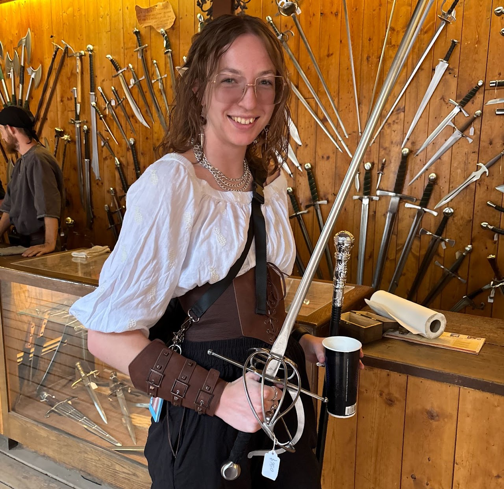
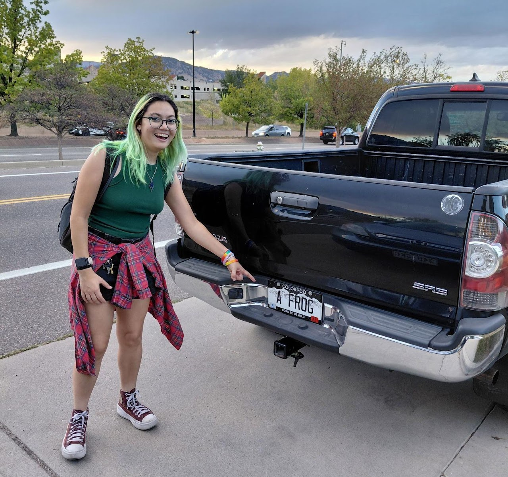

Director

Zack Weaver | Director
Director, BTU Lab | Assistant Teaching Professor, ATLAS Institute.
zack.weaver@colorado.eduI am a wizard with:
- General Tools
- Wood Shop
- Sewing & Textiles
- Electronics
- Lasers (Lazor Wizard)
- 3D Printing
- Shaper CNC
- Way, way more
Fall '26 Staff

Bella Cosentino | Staff
Undergraduate Student, ATLAS Institute
bella.cosentino@colorado.eduMy skills include:
- Woodshop
- Electronics
- Lasers (Lazor Wizard)
- Soldering
- General Tools
- Sewing
- 3D Printing
- 3D Modeling (SketchUp & Blender specifically)
- Most of Adobe Suite
- Programming (C++, Python, JavaScript, Godot, & more)
- Being fitted up

Keturah Dunn | Staff
Undergraduate Student, ATLAS Institute
keturah.dunn@colorado.eduMy skills include:
- 3D Printing (including multicolor printing!)
- 3D Modeling
- Sewing
- General Tools
- Ask me about HueForge!
- Thinking about it

Vani Chhay | Staff
Undergraduate Student, ATLAS Institute
vanica.chhay@colorado.eduMy skills include:
- General Tools
- Lasers (Lazor Wizard)
- Electronics/Circuits
- Prototyping/Design
- 3D Printing
- Soldering
- Programming (Arduino(C++), Processing (JS & Python))
- Sewing
- Overwatch
Terri Hughes | Staff
(O.G. Kai's sister!)
Undergraduate Student, ATLAS Institute
terri.hughes@colorado.eduMy skills include:
- LEATHERWORKING!!!!!!!!! I love leather :)
- General Tools
- Sewing (Handstitch & Machine & Surging)
- Woodshop Tools (Woodshop Wizard)
- Lasers (Lazor Wizard)
- 3D Modeling (Autodesk Inventor & OnShape)
- 3D Printing
- Chain Making (Chain Jewelry/Spikes/Studs)
- Soldering
- Queer Dating Advice
- Telling you only the things you want to hear

Leo Heuring | Staff
Undergraduate Student, ATLAS Institute
President, CU3D
leo.heuring@colorado.eduMy skills include:
- 3D Printing (Ask if you want to try something fun on one of the CU3D printers!)
- 3D Modeling
- CAD (Solidworks)
- Electronics
- Soldering
- Basic PCB Design & Assembly
- Programming (Python & Arduino)
- Fabrication
- Shaper CNC

Sage Morgan-Larosa | Staff
Undergraduate Student, ATLAS Institute
sage.morgan-larosa@colorado.eduSik Skillz:
- 3D Modeling (Mostly Blender & SketchUp)
- 3D Printing
- Coding (C++, Java, Python, TypeScript, CSS)
- General Electronics
- General Tools
- The vast void of nerdem
Volunteer & Emeritus Mischief Makers

Danny Rankin
Director, Whaaat!? Lab | Assistant Teaching Professor, ATLAS Institute
danny.rankin@colorado.eduMy skills include:
- Woodworking
- General Shop Skills
- Laser-cutting (Lazor Wizard)
- Installation Design
- Custom Game Controllers
- General Tools
- Sewing
- Music & Ableton
- 3D Printing
- 3D Modeling (Autodesk Inventor & SketchUp)
- Laser Cutting
- Soldering
- Basic Electronics
- Coding (C++, Max74, a little CSS, HTML, JavaScript)
- K-pop dancing, figure skating, D&D, Rubix cubes, and too many other things

Anika Seter
Undergraduate Student, ATLAS Institute
anika.seter@colorado.eduMy skills include:

Bri Edmonds
Undergraduate Student, ATLAS Institute
bri.edmonds@colorado.eduI can help you with:
Volunteer & Emeritus Mischief Makers
Danny Rankin
Director, Whaaat!? Lab | Assistant Teaching Professor, ATLAS Institute
danny.rankin@colorado.eduMy skills include:
- Woodworking
- General Shop Skills
- Laser-cutting (Lazor Wizard)
- Installation Design
- Custom Game Controllers
- 3D Modeling (Mostly Blender & SketchUp)
- 3D Printing
- Coding (C++, Java, Python, TypeScript, CSS)
- General Electronics
- General Tools
- The vast void of nerdem
Anika Seter
Undergraduate Student, ATLAS Institute
anika.seter@colorado.eduMy skills include: